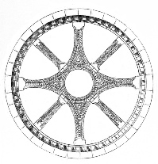

|  |
Symposium 2005 Abstracts |
|
Previous
jj -- jj Next
|
"The
architecture of the Court and the Lord's authority" The
typical architecture structures of the late medieval castles were a manifestation
of lavish royal and noble wealth and grandeur. The gatehouses and drawbridges,
chapels, fabulous towers and fortifications, as well as the unique inner
space arrangement, including living quarters, dining halls and guests'
chambers, all play a major role in the medieval popular imagination. While
the practical justification for those walls was simple matters of protection
from exterior enemies and potential invaders attacks, the romantic images
were of strong, dignified nobles and brave knights who are united by the
leadership of the lord-senior, seeking ways to defend there subjects (farmers
and peasants) as well as protect woman of the nobility. It should be reminded
that during the 12th century, courtly love romance have made fair ladies
the object of the knights' desires. Yet, apart from being presented as
a form of protection enable its knights to express courage, strength,
unity as well as the individual's relation to community, there are other
stories from which one can hear harsh voices of injustice, loneliness,
suffering and imprisonment caused in many cases by the luck of tolerance
(especially towards woman) or, in some cases, the suppressive, capricious,
tyrant-like conduct of the castle's senior toward his inferiors. |
|